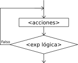

Lazos Repetir

La instrucción Repetir-Hasta Que ejecuta una secuencia de instrucciones hasta que la condición sea verdadera.
Repetir
<instrucciones>
Hasta Que <condición>
Al ejecutarse esta instrucción, la secuencia de instrucciones que forma el cuerpo del ciclo se ejecuta una vez y luego se evalúa la condición. Si la condición es falsa, el cuerpo del ciclo se ejecuta nuevamente y se vuelve a evaluar la condición. Esto se repite hasta que la condición sea verdadera.
Note que, dado que la condición se evalúa al final, las instrucciones del cuerpo del ciclo serán ejecutadas al menos una vez.
Además, a fin de evitar ciclos infinitos, el cuerpo del ciclo debe contener alguna instrucción que modifique la o las variables involucradas en la condición de modo que en algún momento la condición sea verdadera y se finalice la ejecución del ciclo.